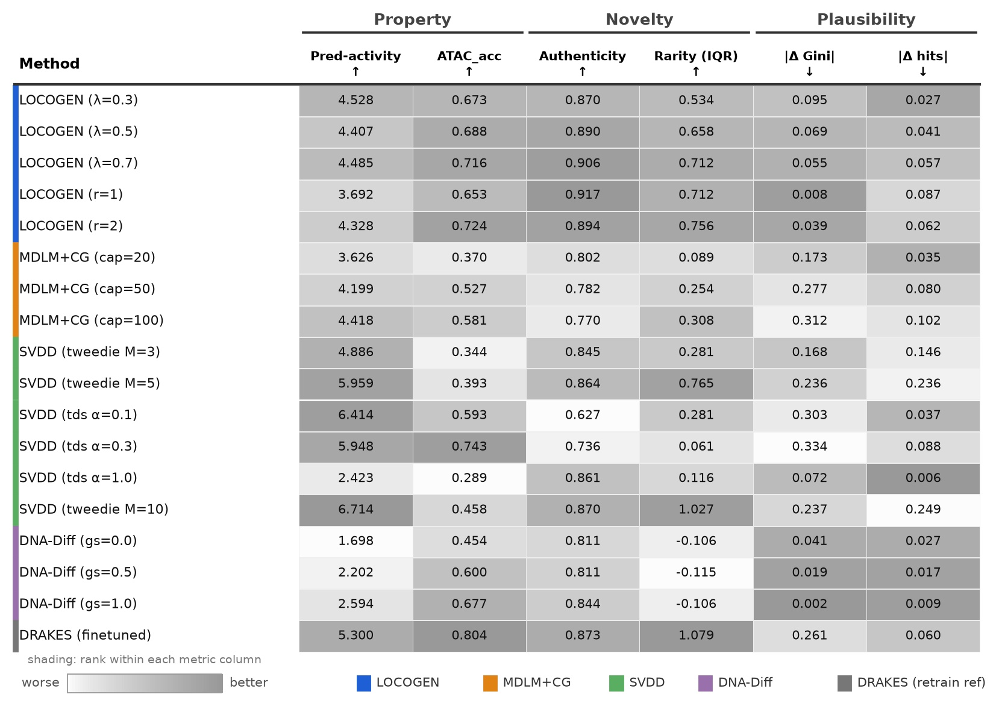
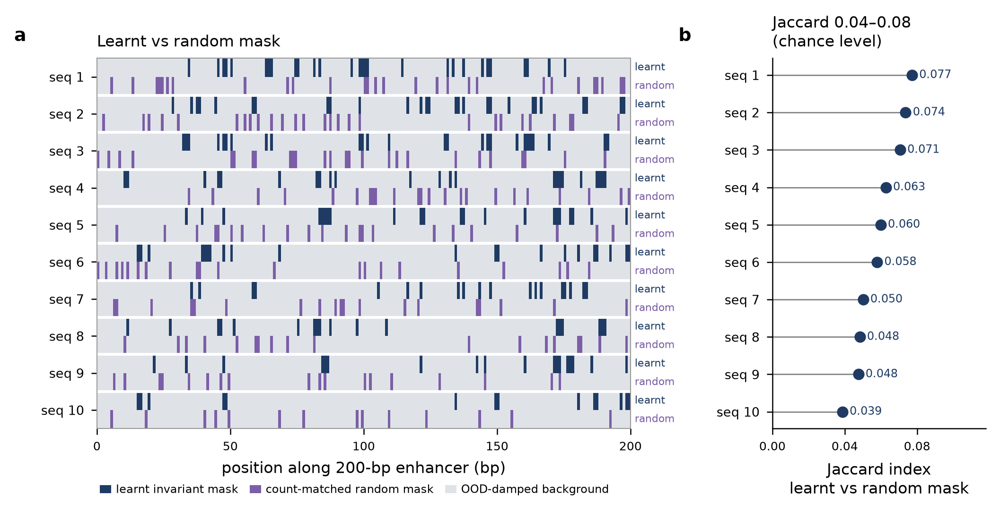

Robustness
| Method | Activity | Accessibility | ||
|---|---|---|---|---|
| DRAKES Pred-activity |
SVDD DNA_evaluation alternative training split |
DRAKES ATAC_acc |
human-atac-catlas different data source |
|
| MDLM | 0.157 (6) | 0.408 ± 0.013 (6) | 0.329 (6) | 0.050 ± 0.009 (6) |
| MDLM+CG | 4.516 (4) | 4.434 ± 0.097 (4) | 0.472 (4) | 0.459 ± 0.014 (5) |
| DNA-Diff | 2.595 (5) | 2.721 ± 0.046 (5) | 0.688 (3) | 0.517 ± 0.020 (4) |
| DRAKES | 5.610 (2) | 5.135 ± 0.076 (2) | 0.804 (1) | 0.829 ± 0.006 (1) |
| SVDD | 6.830 (1) | 6.187 ± 0.018 (1) | 0.442 (5) | 0.547 ± 0.010 (3) |
| LocoGen | 4.679 (3) | 4.660 ± 0.011 (3) | 0.716 (2) | 0.729 ± 0.002 (2) |
Ablation
| Component | Property | Novelty | Plausibility | |||||
|---|---|---|---|---|---|---|---|---|
| CG | Glob. OOD |
Loc. OOD (mask) |
Pred-activity ↑ | ATAC_acc ↑ | Authenticity ↑ | Rarity (IQR) ↑ | |ΔGini| ↓ | |Δhits| ↓ |
| – | – | – | 0.157±0.024 | 0.329±0.198 | 0.777±0.033 | −0.15±0.03 | 0.051±0.006 | 0.071±0.001 |
| – | ✓ | – | 0.300±0.028 | 0.314±0.008 | 0.946±0.002 | +0.46±0.03 | 0.246±0.002 | 0.167±0.007 |
| – | – | Learnt | 0.309±0.020 | 0.311±0.009 | 0.947±0.003 | +0.46±0.03 | 0.244±0.004 | 0.166±0.006 |
| ✓ | – | – | 4.516±0.151 | 0.481±0.022 | 0.809±0.014 | +0.22±0.02 | 0.169±0.013 | 0.043±0.007 |
| ✓ | ✓ | – | 4.608±0.061 | 0.691±0.041 | 0.887±0.012 | +0.62±0.11 | 0.065±0.021 | 0.044±0.015 |
| ✓ | – | Attack | 3.881±0.038 | 0.656±0.004 | 0.887±0.012 | +0.64±0.06 | 0.025±0.007 | 0.083±0.006 |
| ✓ | – | Learnt | 4.679±0.021 | 0.716±0.251 | 0.906±0.006 | +0.71±0.00 | 0.055±0.005 | 0.057±0.003 |

Non-generative baselines
Segmentation-and-shuffle baselines. Three independent criteria decide which positions to freeze — GC content, JASPAR motif hits, and predictor saliency — and each is swept over its strength parameter. Every table reports both shuffle schemes and carries LocoGen as a reference row.
| Baseline | Shuffle | Pred-act. ↑ | ATACacc ↑ | Authent. ↑ | Rarity (IQR) ↑ | |ΔGini| ↓ | |Δhits| ↓ |
|---|---|---|---|---|---|---|---|
| JASPAR PSSM | uniform random | 0.275±0.007 | 0.206±0.004 | 0.928±0.011 | +0.25 | 0.155±0.003 | 0.114±0.005 |
| dinuc.-preserving | 0.122±0.011 | 0.092±0.001 | 0.815±0.012 | −0.12 | 0.069±0.003 | 0.066±0.004 | |
| GC content | uniform random | 0.359±0.056 | 0.252±0.005 | 0.907±0.008 | +0.13 | 0.148±0.007 | 0.129±0.004 |
| dinuc.-preserving | 0.078±0.004 | 0.086±0.004 | 0.809±0.007 | −0.16 | 0.054±0.002 | 0.076±0.004 | |
| Saliency | uniform random | 0.288±0.047 | 0.249±0.003 | 0.961±0.006 | +0.30 | 0.167±0.004 | 0.138±0.005 |
| dinuc.-preserving | 0.199±0.025 | 0.129±0.000 | 0.840±0.022 | −0.03 | 0.101±0.004 | 0.095±0.004 | |
| LocoGen | — | 4.679±0.017 | 0.716±0.251 | 0.906±0.006 | +0.71 | 0.055 | 0.057 |
| GC threshold | Frozen | Shuffle | Pred-act. ↑ | Authent. ↑ | Rarity (IQR) |
|---|---|---|---|---|---|
| ≥ 0.40 | 0.849 | uniform random | 0.104±0.007 | 0.793±0.001 | −0.18 |
| dinucleotide-preserving | 0.132±0.000 | 0.742±0.008 | −0.25 | ||
| ≥ 0.50 | 0.640 | uniform random | 0.218±0.011 | 0.854±0.009 | −0.01 |
| dinucleotide-preserving | 0.095±0.017 | 0.759±0.006 | −0.26 | ||
| ≥ 0.55 | 0.529 | uniform random | 0.292±0.014 | 0.875±0.013 | −0.03 |
| dinucleotide-preserving | 0.109±0.020 | 0.776±0.011 | −0.22 | ||
| ≥ 0.60 | 0.412 | uniform random | 0.308±0.007 | 0.894±0.003 | +0.08 |
| dinucleotide-preserving | 0.107±0.009 | 0.790±0.003 | −0.20 | ||
| ≥ 0.65 | 0.301 | uniform random | 0.359±0.056 | 0.907±0.008 | +0.13 |
| dinucleotide-preserving | 0.078±0.004 | 0.809±0.007 | −0.16 | ||
| ≥ 0.70 | 0.190 | uniform random | 0.329±0.058 | 0.927±0.012 | +0.28 |
| dinucleotide-preserving | 0.069±0.025 | 0.809±0.009 | −0.12 | ||
| ≥ 0.80 | 0.046 | uniform random | 0.305±0.046 | 0.954±0.006 | +0.46 |
| dinucleotide-preserving | 0.053±0.005 | 0.810±0.010 | −0.12 | ||
| LocoGen | — | — | 4.679±0.017 | 0.906±0.006 | +0.71 |
| Detection FPR | Frozen | Shuffle | Pred-act. ↑ | Authent. ↑ | Rarity (IQR) |
|---|---|---|---|---|---|
| p < 10−3 | 0.991 | uniform random | 0.151±0.006 | 0.725±0.000 | −0.24 |
| dinucleotide-preserving | 0.146±0.001 | 0.728±0.001 | −0.27 | ||
| p < 10−5 | 0.245 | uniform random | 0.275±0.007 | 0.928±0.011 | +0.25 |
| dinucleotide-preserving | 0.122±0.011 | 0.815±0.012 | −0.12 | ||
| LocoGen | — | — | 4.679±0.017 | 0.906±0.006 | +0.71 |
| Frozen fraction | Frozen | Shuffle | Pred-act. ↑ | Authent. ↑ | Rarity (IQR) |
|---|---|---|---|---|---|
| top 0.60 | 0.600 | uniform random | 0.223±0.028 | 0.906±0.008 | +0.13 |
| dinucleotide-preserving | 0.216±0.012 | 0.844±0.006 | +0.02 | ||
| top 0.40 | 0.400 | uniform random | 0.255±0.025 | 0.942±0.005 | +0.26 |
| dinucleotide-preserving | 0.230±0.019 | 0.870±0.016 | +0.04 | ||
| top 0.25 | 0.250 | uniform random | 0.288±0.047 | 0.961±0.006 | +0.30 |
| dinucleotide-preserving | 0.199±0.025 | 0.840±0.022 | −0.03 | ||
| top 0.10 | 0.100 | uniform random | 0.261±0.014 | 0.964±0.005 | +0.33 |
| dinucleotide-preserving | 0.119±0.009 | 0.837±0.011 | −0.07 | ||
| LocoGen | — | — | 4.679±0.017 | 0.906±0.006 | +0.71 |